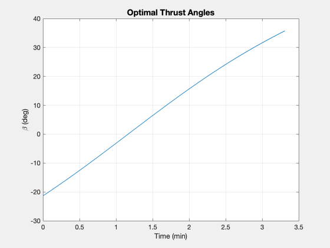
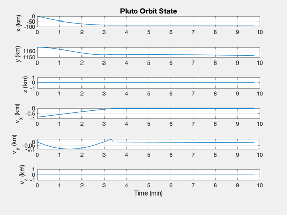
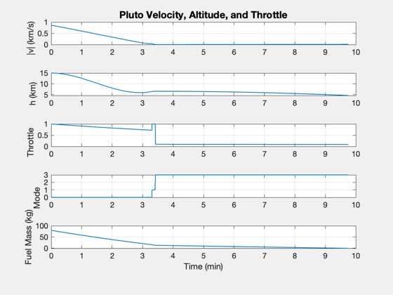
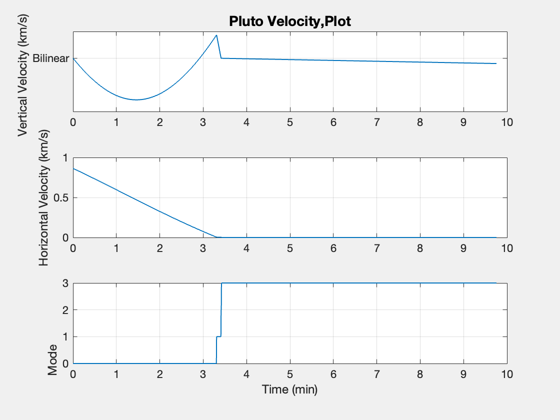
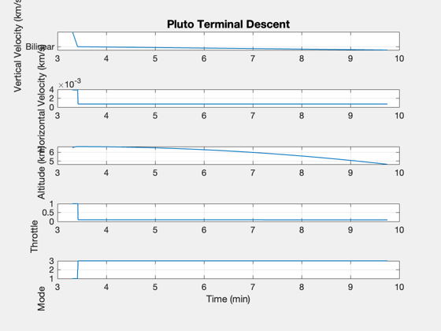

3D lander simulation at Pluto.
The spacecraft has 3-axis thruster control. Ideal attitude pointing is assumed. You must run PlutoLanderCAD first. An altimeter gives the altitude. The planet is assumed to be a perfect sphere.
This demo demonstrates the bilinear tangent law for descent from a circular equatorial orbit.
See also Constant, Plot2D, TimeLabl, Inertias, RK4, Dot, Mag, Unit, RHSPointMass, LandingControlBilinear
Contents
%-------------------------------------------------------------------------- % Copyright (c) 2013-2014 Princeton Satellite Systems, Inc. % All rights reserved. %-------------------------------------------------------------------------- % Since Version 2015.1 %--------------------------------------------------------------------------
Simulation time parameters
dT = 0.25; % sec hStop = 0.0005; % km uE = 285*9.806; % Exhaust velocity (m/s) % Select the planet or moon body = 'Pluto';% rPlanet = Constant('equatorial radius pluto'); % km muPlanet = Constant('mu pluto'); h = 15; % Altitude of initial orbit tEnd = 10*60; % sec nAccel = 7; % Engine acceleration is this multiple of gravity massFuel = 80; gainVelocity = 6; velocityThreshold = 0.001; vMaxFrac = 0.2; hSwitch = 0.3; % Simulation time steps nSim = floor(tEnd/dT); % Spacecraft inertia at start d = struct; d.mass = 150; % kg d.inertia = Inertias( d.mass + massFuel, [1 1 1], 'box', 1 ); % kg-m^2
Set up the bilinear controller
dBilinear = struct; dBilinear.mu = muPlanet; dBilinear.mass = d.mass + massFuel; dBilinear.rP = rPlanet; dBilinear.h = h; dBilinear.nG = nAccel; dBilinear.dT = dT; dBilinear.inertia = d.inertia; dBilinear.hLanding = hSwitch; % The altitude at which to switch to landing mode dBilinear.throttle = 1; dBilinear.landing.gainVelocity = gainVelocity; dBilinear.landing.velocityThreshold = velocityThreshold; dBilinear.landing.vMaxFrac = vMaxFrac; dBilinear.landing.hTouchdown = 0.001; dBilinear.bypassACS = 1; dBilinear = LandingControlBilinear( 'initialize', dBilinear ); % Determine initial s/c orientation (align s/c with initial beta angle) d.hLanding = dBilinear.hLanding;
Descent duration 198.5763 sec
Simulation
% Gravity d.mu = muPlanet; % km^3/s^2 % Disturbances d.fDist = []; % The landing force function % State vector [r;v;mass fuel] % Assume a circular orbit to start r = rPlanet + h; u = sqrt(muPlanet/r); x = [0;r;0;-u;0;0;massFuel]; % Initialize state vector array for plotting xP = zeros(length(x)+3,nSim); % Initialize time t = 0; % Simulate until the lander reaches the surface (within 1 mm) for k = 1:nSim % Sensing - determine altitude hAltimeter = Mag(x(1:3)) - rPlanet; massFuel = x(7); % Controller dBilinear.mass = d.mass + massFuel; dBilinear.r = x(1:3); dBilinear.v = x(4:6); dBilinear.hAltimeter = hAltimeter; dBilinear.t = t; dBilinear.pointingTol = 0.001; dBilinear = LandingControlBilinear('update',dBilinear); d.forceECI = dBilinear.forceECI; % Store for plotting xP(:,k) = [x;hAltimeter;dBilinear.throttle;dBilinear.mode]; % Stop when we reach the surface or run out of fuel if( dBilinear.landing.mode == 4 ) fprintf(1,'Touchdown! |v| = %12.4f km/s\n',Mag(x(4:6))); break end if( hAltimeter <= hStop ) fprintf(1,'Terminating due to hitting the ground. |v| = %12.4f km/s\n',Mag(x(4:6))); break end if( massFuel <= 0 ) fprintf(1,'Terminating due to running out of fuel. |v| = %12.4f km/s h = $12.4 km\n',Mag(x(4:6)),h); break end % Fuel consumption d.mDot = -abs(Mag(d.forceECI))/uE; % Integrate x = RK4(@RHSPointMass,x,dT,t,d); % Increment time t = t + dT; end
Altitude 6.6118 Free-fall velocity 0.0656 Maximum allowed velocity 0.0131 Terminating due to running out of fuel. |v| = 0.0101 km/s h = $12.4 km Terminating due to running out of fuel. |v| = 15.0000 km/s h = $12.4 km
Plot the simulation results
xP = xP(:,1:k); % Time label [t,tL] = TimeLabl((0:(k-1))*dT); % Plot Titles s1 = sprintf('%s Orbit State',body); s2 = sprintf('%s Velocity, Altitude, and Throttle',body); s3 = sprintf('%s Terminal Descent',body); % Plot position in ECI frame yL = {'x (km)','y (km)','z (km)','v_x (km)','v_y (km)','v_z (km)'}; Plot2D( t, xP( 1:6,:), tL, yL, s1 ) % Summary plot yL = {'|v| (km/s)' ,'h (km)', 'Throttle' 'Mode' , 'Fuel Mass (kg)'}; Plot2D( t, [Mag(xP(4:6,:));xP([8 9 10 7],:)], tL, yL, s2); % Velocity plot uV = Unit(xP(1:3,:)); vV = Dot(uV,xP(4:6,:)); vH = Mag(xP(4:6,:) - uV.*[vV;vV;vV]); s2 = sprintf('%s Velocity,Plot',body); Plot2D( t, [vV;vH;xP(10,:)], tL, {'Vertical Velocity (km/s)' 'Horizontal Velocity (km/s)' 'Mode'},s2) set(gca,'YTick',[0 1 2 3 4],'YTickMode','manual',... 'YTickLabel',{'Bilinear' 'Vertical' 'Velocity' 'Terminal' 'Touchdown'}) % Generate a terminal maneuvering plot k = find(xP(10,:) > 0 ); vV = vV(k); vH = vH(k); xP = xP(8:10,k); t = t(k); Plot2D( t, [vV;vH;xP], tL, {'Vertical Velocity (km/s)' 'Horizontal Velocity (km/s)' 'Altitude (km)' 'Throttle' 'Mode'},s3) set(gca,'YTick',[0 1 2 3 4],'YTickMode','manual',... 'YTickLabel',{'Bilinear' 'Vertical' 'Velocity' 'Terminal' 'Touchdown'}) %-------------------------------------- % PSS internal file version information %-------------------------------------- % $Id: e325813bbae0c235174a8040ce5a3d5254f7021d $   